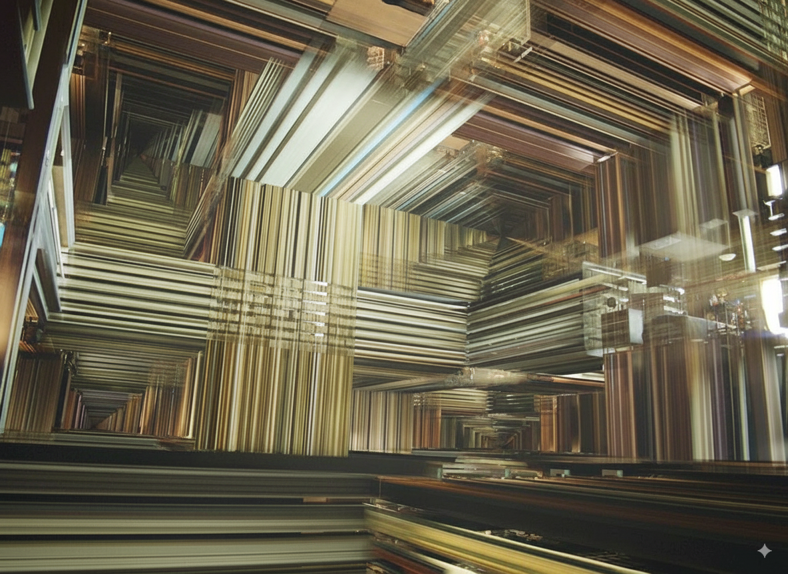

Our Innovations

Cambrian-S
Toward spatial supersensing in video.

Cambrian-1
A Fully Open, Vision-Centric Exploration of Multimodal LLMs.
Welcome to the Cambrian World.
Toward spatial supersensing in video.
A Fully Open, Vision-Centric Exploration of Multimodal LLMs.